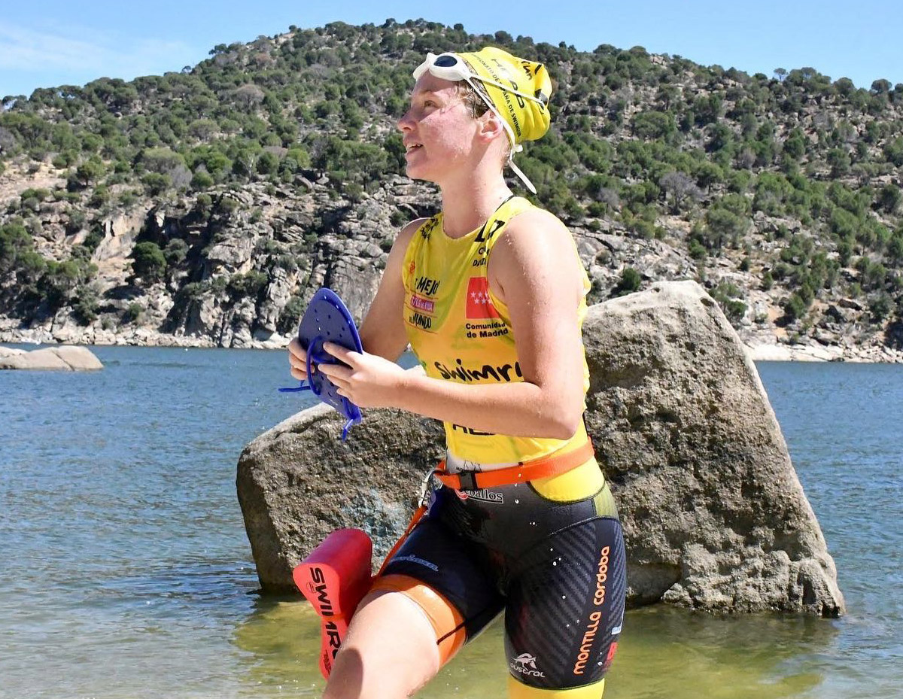

Escrito por Iker Roca | 21 de mayo de 2024
Clara Davies ha logrado un impresionante subcampeonato en el reciente Campeonato de España de SwimRun celebrado en la Comunidad de Madrid. Esta competición, conocida por su dureza y su exigente recorrido, ha reunido a los mejores atletas del país en una prueba que combina tramos de natación y carrera a pie en un entorno natural.
El evento tuvo lugar en los parajes naturales de la Comunidad de Madrid, proporcionando un escenario perfecto para el SwimRun. Los participantes enfrentaron un desafiante recorrido que alternaba segmentos de natación en aguas abiertas con tramos de carrera a pie por senderos y terrenos variados.
Clara Davies se destacó desde el inicio de la competencia, manteniendo un ritmo constante y demostrando una gran habilidad tanto en el agua como en tierra. Su determinación y preparación la llevaron a cruzar la línea de meta en segundo lugar, asegurando así el subcampeonato.
La clave del éxito de Davies en esta competencia fue su habilidad para adaptarse rápidamente a los cambios de disciplina. Su técnica de natación fue impecable, lo que le permitió ganar tiempo valioso en los tramos acuáticos, mientras que su resistencia y velocidad en la carrera le ayudaron a mantener su posición en los segmentos de tierra.
Davies comentó sobre su experiencia tras la carrera: "Ha sido una competencia muy dura, pero estoy muy contenta con el resultado. La preparación ha sido intensa, y estoy agradecida por el apoyo de mi equipo y mi familia. Este subcampeonato es un gran logro para mí y un paso importante en mi carrera deportiva."
La preparación para esta competencia fue rigurosa. Clara Davies y su equipo trabajaron durante meses para optimizar su rendimiento en ambas disciplinas. Los entrenamientos incluyeron sesiones específicas de natación en aguas abiertas y carreras en terrenos variados para simular las condiciones de la competencia.
El apoyo de su equipo técnico y su familia fue fundamental para alcanzar este éxito. "Sin el respaldo de mi equipo y el ánimo de mis seres queridos, esto no habría sido posible. Este logro es compartido con todos ellos", añadió Davies.
Con este subcampeonato, Clara Davies reafirma su posición como una de las mejores atletas de SwimRun en España. Su mirada ya está puesta en futuros desafíos y competiciones, con la intención de seguir mejorando y alcanzar nuevos éxitos.
La comunidad del SwimRun y los aficionados al deporte han celebrado este logro, reconociendo el talento y la dedicación de Davies. Este subcampeonato es solo el comienzo de lo que promete ser una carrera llena de éxitos para la joven atleta.
Las redes sociales y los medios de comunicación han estado llenos de mensajes de felicitación para Clara Davies. Las autoridades deportivas y los aficionados han expresado su orgullo y han destacado la importancia de este logro para el deporte nacional.
El presidente de la Federación Española de SwimRun, Juan Pérez, declaró: "Clara Davies ha demostrado una vez más su talento y su dedicación. Este subcampeonato es un reflejo de su esfuerzo y su compromiso con el deporte. Estamos muy orgullosos de ella y seguros de que vendrán muchos más éxitos en el futuro."
Referencia: Federación Española de SwimRun.